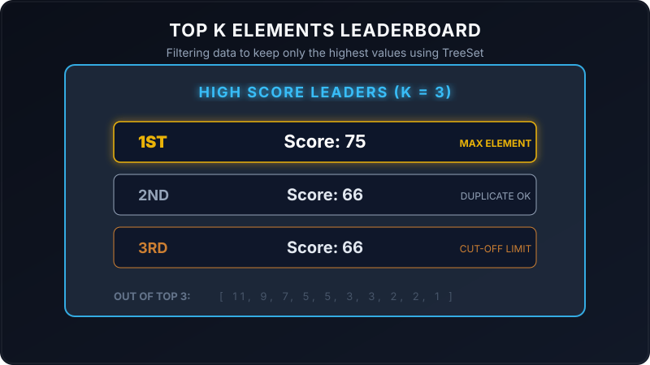

Finding the top K largest or smallest elements in a stream of numbers is a common challenge in data engineering. For example, you might want to display the top 3 highest scores on a gaming site, or the top 10 most popular products on a shopping app.
To do this dynamically and efficiently in Java, we use a self-sorting data collection called a TreeSet. Let's see how this works using a simple arcade game analogy.

Imagine you run a classic arcade machine. The screen has a High Score Leaderboard with only three slots (K = 3).
As kids play games, they get scores. To maintain the board:
- Every time a score is submitted, the machine slots it into its sorted ranking list automatically.
- By default, a Java
TreeSetignores duplicates (if two players score exactly 66, it will only keep one). To prevent this, we write a custom rule: "Even if two scores are equal, keep them both as separate entries on the board!" - Once all players submit their scores, the board displays the top 3 rows, letting you know who takes home the trophies!
Walkthrough of the Main Method Scenario
Let's trace how the program executes step-by-step from the entry point of the main method:
The program declares an array of raw unsorted scores and sets our leaderboard limit to 3:
int[] arr = {1, 3, 66, 5, 7, 2, 3, 5, 9, 2, 11, 66, 75};
int k = 3;We create a TreeSet with a custom comparator rule:
TreeSet<Integer> treeSet = new TreeSet<>((o1, o2) -> {
if (o2 > o1 || o2 == o1) {
return 1; // puts o2 before o1 (descending)
} else if (o2 < o1) {
return -1;
}
return 1;
});Typically, a comparator returns 0 if two values are equal, telling TreeSet to discard the duplicate. By returning 1 for equality instead of 0, we bypass this mechanism and successfully allow duplicate scores (like having multiple 66s) on our board!
The program loops and adds all elements to the TreeSet:
for (int a : arr) {
treeSet.add(a);
}The collection automatically keeps elements sorted in descending order: [75, 66, 66, 11, 9, 7, 5, 5, 3, 3, 2, 2, 1].
Next, the program opens an iterator and prints the first k elements:
while (iterator.hasNext() && k > 0) {
System.out.println(iterator.next());
--k;
}This yields the top 3 highest scores: 75, 66, and 66.
Java Implementation
Below is the complete Java code demonstrating leaderboard sorting with a custom comparator:
package io.practise.accolite;
import java.util.Iterator;
import java.util.TreeSet;
public class TopKElements {
public static void main(String[] args) {
int[] arr = {1, 3, 66, 5, 7, 2, 3, 5, 9, 2, 11, 66, 75};
int k = 3;
// Self-sorting collection sorted in descending order
TreeSet treeSet = new TreeSet<>((o1, o2) -> {
if (o2 > o1 || o2 == o1) {
return 1; // puts higher or equal elements first
} else if (o2 < o1) {
return -1;
}
return 1;
});
for (int a : arr) {
treeSet.add(a);
}
Iterator iterator = treeSet.iterator();
// Retrieve the first K elements
while (iterator.hasNext() && k > 0) {
Integer temp = iterator.next();
System.out.println(temp);
--k;
}
}
} Conclusion
Using a self-sorting structure like TreeSet with a custom comparator makes finding the top K elements easy. It maintains order automatically on insertion, allowing you to fetch the highest values instantly without needing to sort the raw array multiple times!